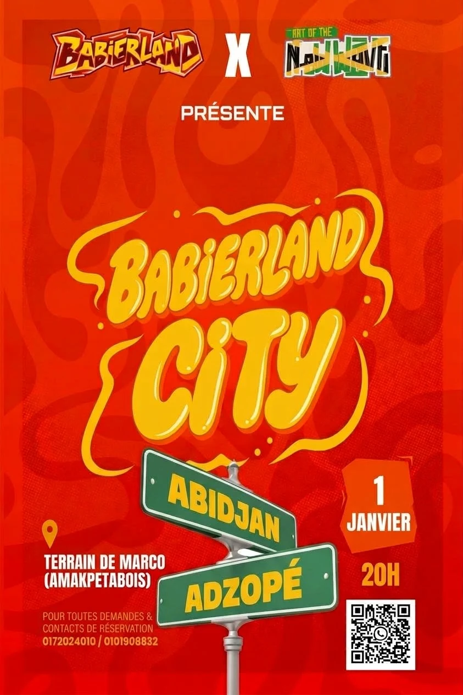
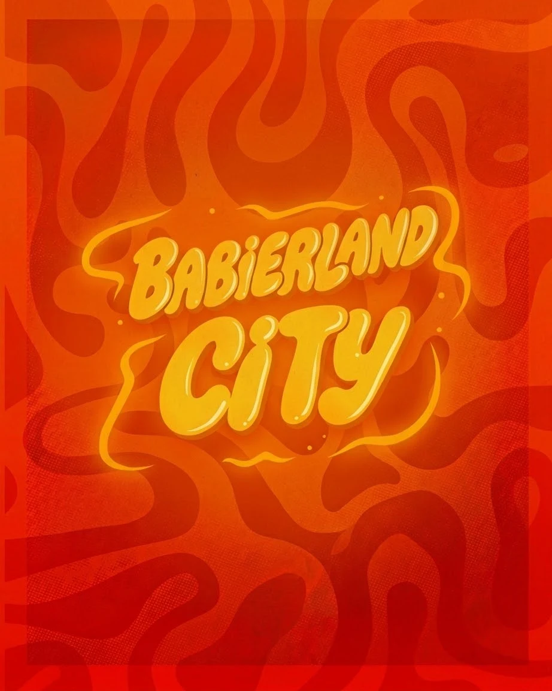
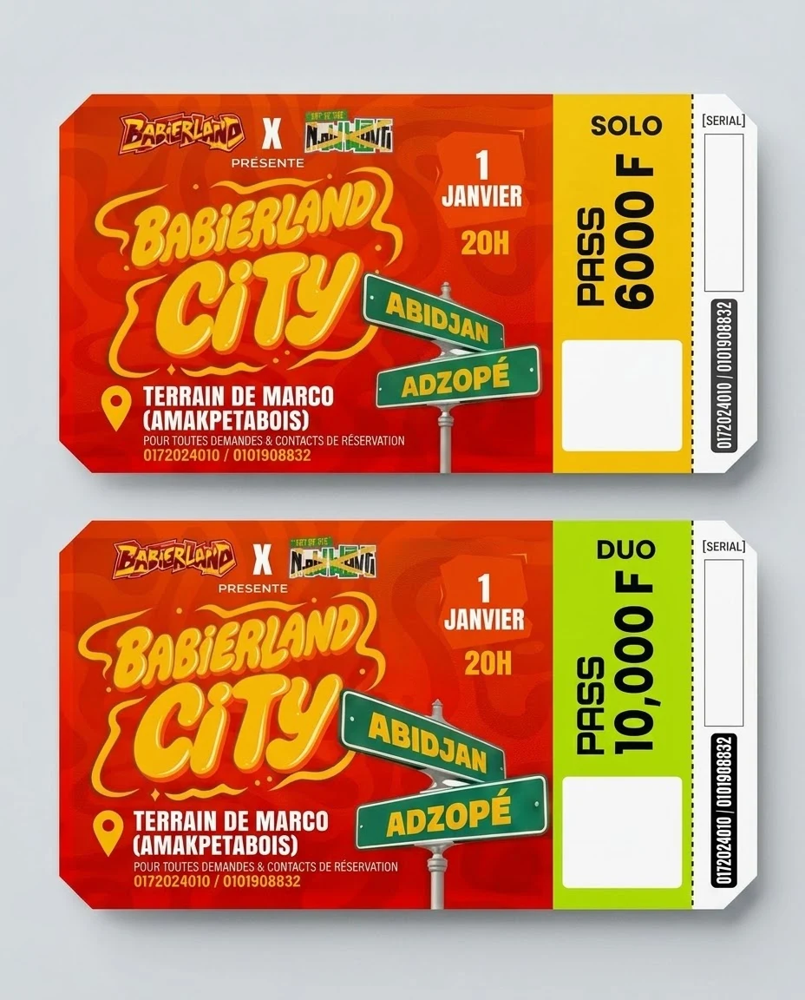

01
L'événement
Babierland City, c'est la soirée festive de la jeunesse d'Adzopé : ambiance DJ, jeux et prestations artistiques pour mettre en lumière les talents d'ici.
- Nom
- Babierland City
- Organisé par
- Babierland × Art of the New Wave
- Date
- Vendredi 1er janvier 2027 · 20h
- Lieu
- Terrain de Marco (Amakpétabois), Adzopé, Côte d'Ivoire
- Public
- La jeunesse, de 15 à 30 ans
- Jauge
- 300 personnes maximum
- Pass Solo
- 6 000 F · 1 personne · ticket jaune
- Pass Duo
- 10 000 F · 2 personnes · ticket vert citron
- Paiement
- Wave, Orange Money, MTN MoMo, Moov Money
- Contacts
- 01 72 02 40 10 · 01 01 90 88 32
- babierlandcity@gmail.com
- Réseaux
- @Babierlandcity
02
Univers & ambiance
L'affiche donne le ton : de la lave orange qui bouge, un titre jaune bien gonflé et des panneaux de rue verts qui relient Abidjan à Adzopé. On garde cette énergie urbaine, chaude et festive partout.
Urbain
Festif
Chaud
Street
Jeune
Fier d'Adzopé
Les visuels de référence



Les 4 piliers visuels
La lave
Fond rouge-orangé en volutes. C'est le décor de toutes les pièces principales.
Le titre bulle
Le lettrage jaune, gonflé et brillant. On n'y touche jamais : c'est le logo.
Le panneau de rue
Le vert des panneaux Abidjan / Adzopé. Il signale les lieux, les rubriques et les infos clés.
Le ticket
Le talon prédécoupé jaune (Solo) ou citron (Duo), avec le prix en colonne.
03
Logos
Trois logos cohabitent. Babierland City est la vedette. Babierland et Art of the New Wave signent l'événement en duo, toujours en haut ou en bas, séparés par un « × ».


Fonds autorisés
Zone de protection & tailles minimales
Règle du « X »
X = la hauteur de la lettre « C » de CITY. Laisse au moins 1 X de vide autour du logo : aucun texte, bord ou autre logo dans cette zone.
Tailles minimales
Babierland City : 120 px de large à l'écran, 30 mm en impression.
Babierland et Art of the New Wave : 80 px / 20 mm.
Co-signature
Babierland × Art of the New Wave : même hauteur visuelle, « × » blanc en Rubik Black, puis « PRÉSENTENT » en dessous.
À ne pas faire
Déformer ou étirer
Changer les couleurs
Poser sur du jaune : le logo disparaît
Tourner ou poser sur une image chargée
04
Couleurs
Couleurs relevées directement sur l'affiche, les tickets et le logo officiels. Clique sur un code pour le copier.
Proportions
Brasier 55 %
Crème 20 %
Soleil 12 %
Vert 8 %
5 %
Le rouge domine (fonds, en-têtes), le crème laisse respirer le contenu, le jaune attire l'œil sur l'action, le vert signale les infos pratiques. Le citron est réservé au Pass Duo et aux confirmations.
Contrastes vérifiés (WCAG 2.2)
| Combinaison | Ratio | Utilisation |
|---|---|---|
| Encre / Soleil | 11,1 : 1 | Tout texte · boutons principaux |
| Encre / Crème | 17,2 : 1 | Texte courant |
| Encre / Citron | 11,1 : 1 | Tout texte |
| Blanc / Vert | 6,4 : 1 | Tout texte |
| Blanc / Brasier | 5,2 : 1 | Tout texte |
| Brasier / Crème | 4,9 : 1 | Titres, liens, prix |
| Soleil / Vert | 3,8 : 1 | Gros texte seulement (panneaux) |
| Soleil / Brasier | 3,2 : 1 | Gros titres ≥ 24 px seulement |
| Blanc / Flamme | 3,1 : 1 | À éviter pour du texte · encre à la place (6 : 1) |
05
Typographie
Deux familles Google Fonts gratuites. Anton pour crier (titres, dates, prix), comme sur les tickets. Rubik pour parler (textes, boutons, panneaux) : ses angles arrondis rappellent le logo bulle.
Titrage · Anton Regular
Aa 1er
ABCDEFGHIJKLMNOPQRSTUVWXYZ 0123456789 · 6 000 F
Toujours en MAJUSCULES. Interlignage 0,95 à 1,05. Jamais pour un paragraphe.
Texte & interface · Rubik 400 → 900
Aa
Abcdefghijklmnopqrstuvwxyz · éèàçô · 0123456789
400 texte · 600 liens · 700 boutons · 800 sous-titres · 900 panneaux. Minimum 16 px sur mobile.
Échelle
Display · 96 / 48Babierland CityH2 · 64 / 40Choisis ton passH3 · 24 · 800Infos pratiquesLead · 18 · 400La soirée festive de la jeunesse d'Adzopé.Body · 16 · 400Rendez-vous le 1er janvier 2027 à 20h au Terrain de Marco.Label · 14 · 700Pass & tarifs06
Éléments graphiques
Les éléments signature de l'affiche, recréés en CSS pour le web : nets à toutes les tailles et légers.
AbidjanAdzopé
Panneau de rue
Vert, double filet blanc, texte jaune Rubik 900. Incliné de −4° à +3°. Pour les lieux et les rubriques.
1JANVIER
2027
2027
Badge date
Bloc orange aux bords irréguliers, Anton blanc. Réservé à la date (texte ≥ 24 px).
Terrain de Marco
(Amakpétabois)
Pin de lieu
Icône pin jaune + adresse en Rubik 800 capitales, blanc.
Texture lave
Volutes rouges et orange extraites du visuel officiel, adoucies par deux dégradés. Fond des en-têtes, du contact et des visuels réseaux.
Pass Duo
2 personnes
2 personnes
10 000 F
Ticket
Corps rouge + talon en pointillés. Jaune = Solo, citron = Duo. Prix en Anton, à la verticale.
07
Icônes
Une seule famille : Lucide (open source), trait de 2,25 px, angles arrondis. Tailles 16 / 20 / 24 / 28 px. Pas d'emoji à la place des icônes dans l'interface (ils restent permis dans les messages WhatsApp).
08
Composants web
Style « bloc vibrant » : contours encre de 2,5 px, ombre portée pleine (jamais floue), coins arrondis, zones tactiles de 48 px minimum.
Boutons
Un seul bouton jaune par écran : c'est l'action principale. Survol : il monte de 2 px. Appui : il s'enfonce. Désactivé : 45 % d'opacité.
Champs de formulaire
Champ normal
Focus : halo jaune
Adresse e-mail invalide (ex. nom@gmail.com).
Pass, pastilles & notifications
Pass Solo
1 personne
1 personne
6 000 F
Pass Duo
2 personnes
2 personnes
10 000 F
1er janv. 2027
20h
Adzopé
Paiement reçu ! Ton ticket part sur WhatsApp.
09
Ton & messages
On parle comme un pote qui organise LA soirée : on tutoie, on est joyeux et direct, et on donne toujours l'info utile (date, lieu, prix).
On dit
- « Réserve ta place », « Choisis ton pass »
- « Plus que 40 places ! »
- « On démarre l'année ensemble à Adzopé »
- Prix au format « 6 000 F »
- Numéros au format « 01 72 02 40 10 »
On évite
- Le vouvoiement administratif (« Veuillez procéder… »)
- Les erreurs vagues (« Champ invalide »)
- Les promesses non confirmées (artistes non annoncés)
- Les numéros personnels de l'équipe en public
- « 6000 FCFA », « 6.000F » : un seul format
Message de confirmation (WhatsApp / e-mail)
Ton inscription à Babierland City est confirmée ! 🎉 Pass Duo n° DUO-027. Rendez-vous le 1er janvier 2027 à 20h au Terrain de Marco, Amakpétabois (Adzopé). Prépare-toi pour une soirée d'ambiance avec DJ, jeux et talents ! 🔥20:14 ✓✓
10
Déclinaisons
Gabarits pour les réseaux. Toujours la même structure : signatures en haut, logo au centre, infos et action en bas.
×
1JANVIER · 20H
Adzopé
Réserve ton pass
Story Instagram / statut WhatsApp · 1080 × 1920
Compte à rebours
J-30
1er janvier 2027 · Adzopé
Post carré · 1080 × 1080. Pour le compte à rebours, les annonces de talents et les « Plus que X places ».
Solo 6 000 F · Duo 10 000 FTerrain de Marco · 1er janvier 2027 · 20h
Réserver
Bannière · 1500 × 500 (couverture Facebook / X, signature e-mail)
11
Maquette du site
Le site en une page : accueil avec compte à rebours et jauge, la soirée, infos pratiques et carte, pass, réservation en 3 étapes avec mobile money, équipe, FAQ et contact. Les aperçus ci-dessous sont interactifs.
12
Tokens pour le développeur
À coller tel quel dans le CSS du site. Les composants n'utilisent jamais un code couleur en dur : toujours une variable.
@import url('https://fonts.googleapis.com/css2?family=Anton&family=Rubik:wght@400;500;600;700;800;900&display=swap');
:root {
/* Couleurs de marque */
--brasier: #D51D02; /* rouge principal */
--braise: #7A0A02; /* rouge profond */
--flamme: #F26A0F; /* orange */
--soleil: #F7C21C; /* jaune titre / CTA */
--or-solo: #F1C40E; /* Pass Solo */
--citron: #ADD906; /* Pass Duo */
--panneau: #2E6B45; /* vert panneau */
--creme: #FFF6E5; /* fond clair */
--encre: #1B1210; /* texte / contours */
/* Typo */
--font-display: "Anton", Impact, sans-serif;
--font-sans: "Rubik", system-ui, sans-serif;
/* Espacements 4/8 */
--s-1: 4px; --s-2: 8px; --s-4: 16px; --s-5: 24px; --s-6: 32px; --s-7: 48px; --s-8: 64px;
/* Formes & ombres */
--r-sm: 8px; --r-md: 14px; --r-lg: 22px; --r-pill: 999px;
--shadow-1: 0 2px 0 rgba(27,18,16,.9);
--shadow-2: 0 6px 0 rgba(27,18,16,.9);
/* Mouvement */
--ease-out: cubic-bezier(.2,.8,.2,1);
--dur-fast: 150ms; --dur: 220ms; --dur-slow: 320ms;
}Fichier complet (thème sombre, boutons, panneau, badge, texture) : brand.css
13
À compléter
Ce qu'il manque pour finaliser la marque et le site. Validation : Brou Yann (communication & marketing).
- Couleurs, typographies, logos détourés et composants : prêts.
- Logos en haute définition : PNG d'origine à fond transparent (les versions actuelles sont détourées depuis les aperçus). À envoyer
- Vidéo teaser (24 s) pour l'accueil du site. À envoyer
- Photos d'Alfred Kulai et de Junior Soumahoro, plus les originaux des 7 autres. À envoyer
- Lien WhatsApp direct et compte TikTok. À compléter
- Programme horaire de la soirée et noms des artistes. Facultatif
- Répartition des tickets : option A proposée (100 Solo + 100 Duo = 300 personnes). À valider
- Point Google Maps exact du Terrain de Marco. À envoyer